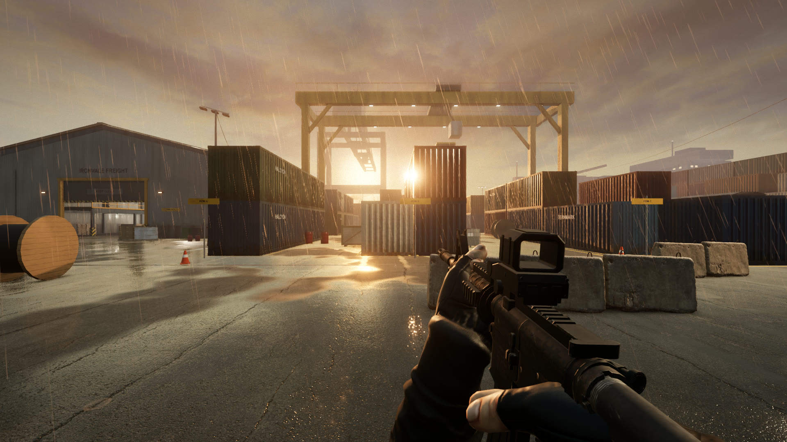
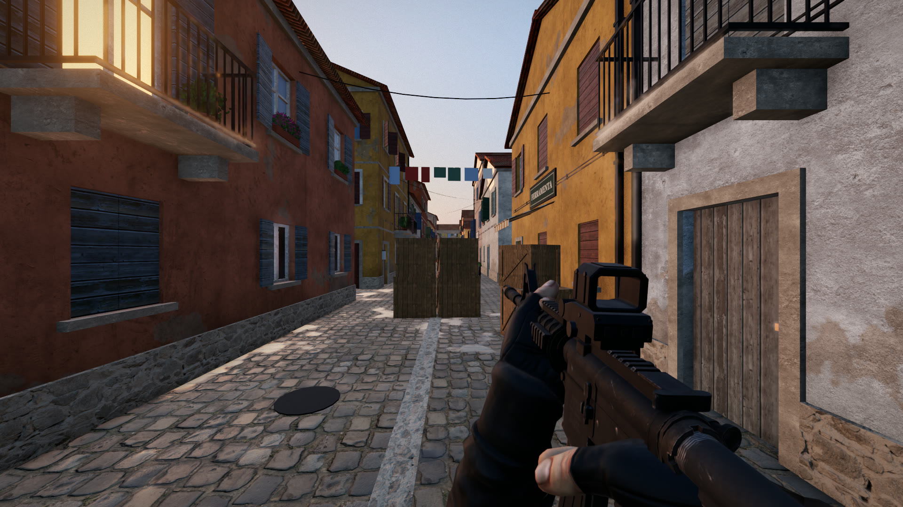
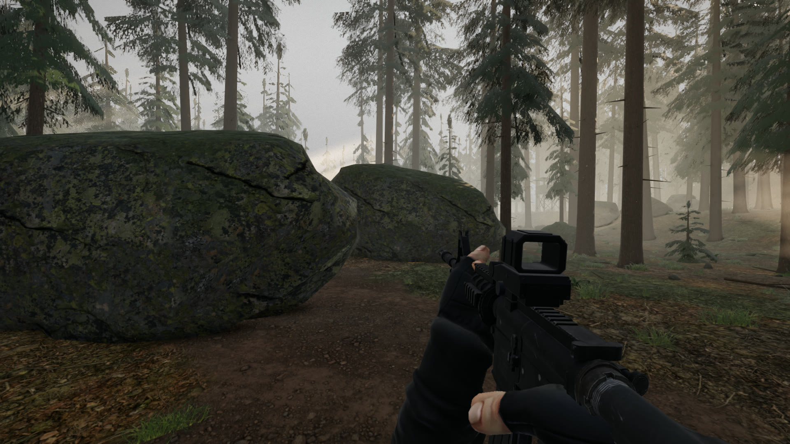

A first-person shooter that runs in your browser
Ironvale is a small shooter with three maps, seven guns and enemies that take cover, flank and call out. Play alone against bots, or with one friend over a direct connection. It is free and the code is open.
It was built for a MacBook: you can play the whole game on a trackpad, with fire and aim on the keyboard so you never have to press and drag at once. A mouse works too.
Needs Chrome, Edge or Safari with WebGPU. Older browsers fall back to WebGL 2.

Railyard
A container and rail freight yard in steady rain at dusk. Long lanes between the stacks, a warehouse with a mezzanine, and a low sun under the cloud.

Harbor
A fishing town at golden hour: a cobbled quay, narrow lanes, a square and an upper terrace.

Pinewood
A pine forest in morning mist. Boulders, a dry creek, a ruined cabin and a hunting stand.
| Slot | Weapon | Action | Rounds | Rate, rpm |
|---|---|---|---|---|
| 1 | M4A1Carbine | Automatic | 30 | 800 |
| 2 | M1 GarandRifle, eight-round clip | Semi-automatic | 8 | 320 |
| 3 | MP5Submachine gun | Automatic | 30 | 800 |
| 4 | Remington 870Shotgun, loaded a shell at a time | Pump | 6 | 68 |
| 5 | M24Scoped sniper rifle | Bolt | 5 | 42 |
| 6 | M249Light machine gun, belt fed | Automatic | 100 | 775 |
| 7 | M1911Pistol | Semi-automatic | 7 | 380 |
- Skirmish
- Clear every enemy on the map. You have three lives.
- Survival
- Waves that grow by two each round. One life.
- Co-op
- Two players against the bots, in Skirmish or Survival.
- Duel
- One against one, first to ten.
- Difficulty
- Recruit, Regular, Veteran and Elite. It changes how fast enemies react, how well they aim and how hard they push.
- Graphics
- Four quality levels, with switches for reflections, shadows, light shafts and render scale. The game lowers its resolution by itself to hold the frame rate.
| Move | W A S D |
| Look | Trackpad |
| Fire | Space or click |
| Aim | Q |
| Reload | R |
| Jump, crouch | F, C |
| Sprint | Shift |
| Weapons | 1 to 7, or two-finger scroll |
| Pause | Esc |
The mouse preset uses the usual layout: click to fire, right-click to aim, Space to jump.
The Mac app is the same game in its own window, with every map, model and sound inside it, so it runs with no network. It updates itself when a new version is out.
macOS 13 or later, Apple silicon and Intel. Signed and notarized.
Two-player games connect the two computers directly. One player hosts and sends a code; the other pastes it in and sends a reply code back.
The code is MIT licensed. Models, textures and sounds come from Poly Haven, Freesound, the Free Firearm Sound Library and artists on Sketchfab, under CC0 and CC BY 4.0. The credits name every one.